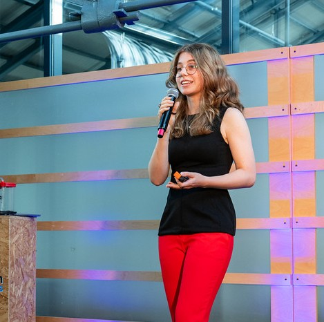
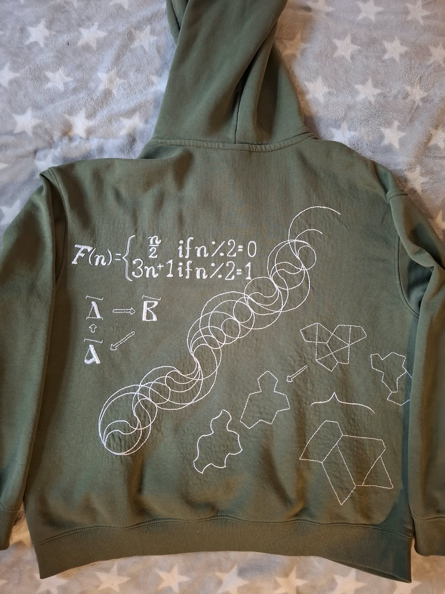
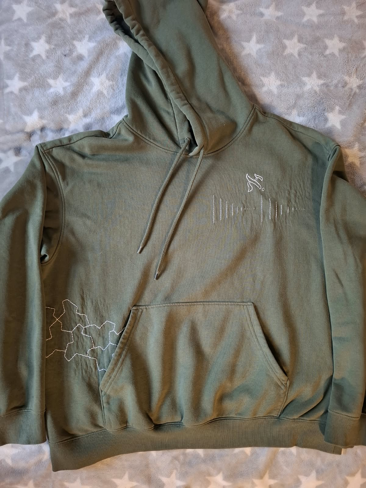

About me
Hi, I'm Paula!

I moved to Ireland at 18, fell in love with hardware and built some cool things along the way. From race cars to robots, if you want to learn more about my projects, check out the rest of the PCB on my homepage :)
Currently I'm focusing on sensor integration for robotics, so giving robots eyes and ears and helping them interact with the real world.
I'm also a huge foodie and love my grandma hobbies, like the embroidered hoodie here!
On this page you can find some more things I've been up to outside of my technical projects.


01 / 02